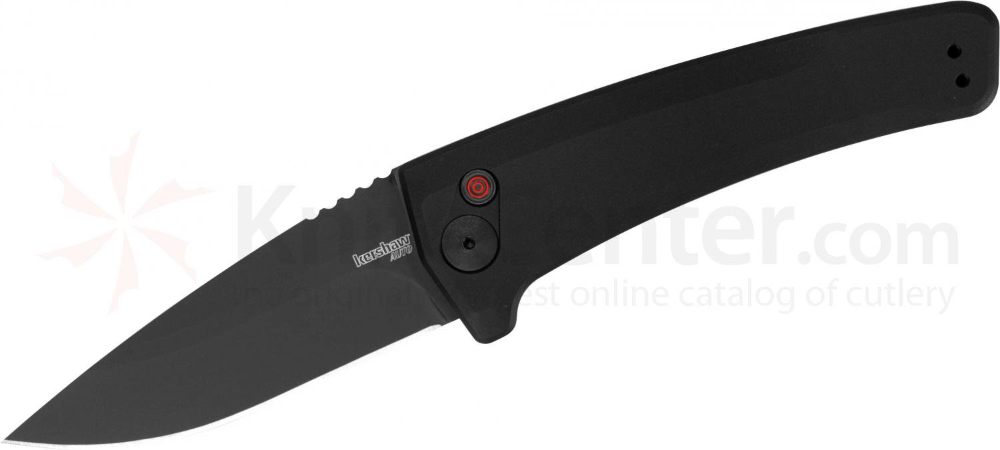

The Kershaw Launch 3 is an automatic knife featuring aluminum handles.
An automatic knife is also known as a switchblade because it is deployed by a button or switch.

Blade Steel: CPM 154
Blade Length: 3.4 inches
Weight: 3.4 oz.
Handle Material: Aluminum
Country of Manufacture: USA
Home Spyderco Positron Benchmade Griptillian Kershaw Launch 3